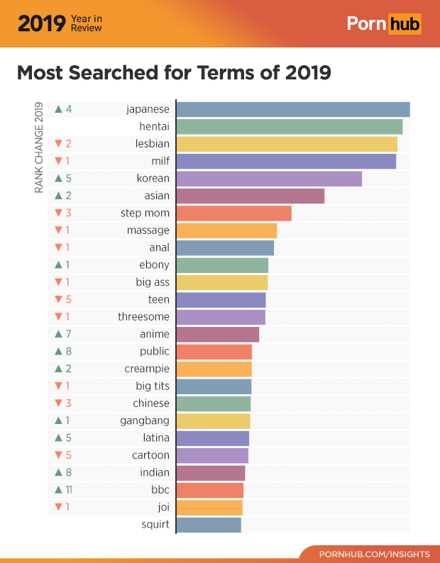

Sexy Stats & Facts 🔥

Fact #1: 1 in 5 mobile searches are for pornography
Fact #2: 88% of scenes in porn films contain acts of physical agression.
Fact #3: 49% of scenes contain verbal agression.
Fact #4: 51% of male students and 32% of female students first viewed porn before their teenage years.
Fact #5: The first exposure to pornography among men is 12 years old, on average.
Fact #6: 68% of divorce cases involved one party meeting a new lover over the Internet.
Fact #7: 70% of wives of sex addicts could be diagnosed with PTSD.
Fact #8: Sexual dysfunction with real-world partners, in particular erectile dysfunction, can be linked to heavy engagement in online sexual activities.
Fact #9: 73.8 percent of users hoping to alleviate stress, 70.8 percent trying to assuage boredom, and 53 percent wanting to forget their daily problems.
Fact #10: Only 43% of teens believe porn is bad for society, compared to 31% of young adults 18-24, 51% of Millennials, 44% Gen-Xers, and 59% of Boomers.